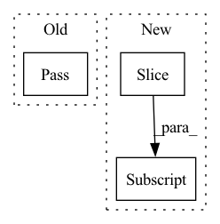

Pattern ID :9304
Before Change
cutoff.stop_gradient = True
// ws[:, cutoff:] = self.nets["mapping"](paddle.randn(z.shape), c, skip_w_avg_update=True)[:, cutoff:]
if cutoff == ws.shape[1]:
pass
else:
temp = self.mapping(paddle.randn(z.shape), c, skip_w_avg_update=True)[:, cutoff:]
temp2 = ws[:, :cutoff]
ws = paddle.concat([temp2, temp], 1)After Change
if self.style_mixing_prob > 0:
cutoff = torch.empty([], dtype=torch.int64, device=ws.device).random_(1, ws.shape[1])
cutoff = torch.where(torch.rand([], device=ws.device) < self.style_mixing_prob, cutoff, torch.full_like(cutoff, ws.shape[1]))
ws[:, cutoff:] = self.mapping(torch.randn_like(z), c, skip_w_avg_update=True)[:, cutoff:]
img = self.synthesis(ws)
return img, wsIn pattern: SUPERPATTERN
Frequency: 4
Non-data size: 3
Instances Fragment ID: 33434132
Project Name: miemie2013/miemiegan
Commit Name: 0ad2483396ab17c9512db493c01be594f47431b0
Time: 2022-02-23
Author: 53960695+miemie2013@users.noreply.github.com
File Name: mmgan/models/architectures/styleganv2ada_model.py
M Class Name: StyleGANv2ADAModel
N Class Name: StyleGANv2ADAModel
M Method Name: run_G(4)
N Method Name: run_G(4)
M Parent Class: torch.nn.Module
N Parent Class: torch.nn.Module
M File Name: mmgan/models/architectures/styleganv2ada_model.py
N File Name: mmgan/models/architectures/styleganv2ada_model.py
M Start Line: 127
M End Line: 147
N Start Line: 128
N End Line: 133
Before Change
def eval_precision_at_k(pred, labels, k):
pass
After Change
threshold = 0.5
// Number of predicted outliers in top k
n_pred_k = sum((s >= threshold) for (s, _) in scores[:k] )
// Number of true positive instances in top k
n_true_and_pred_k = sum((l and (s >= threshold)) for (s, l) in scores[:k]) Fragment ID: 33434133
Project Name: pygod-team/pygod
Commit Name: 318a74f9f76cedcb4982c8274ddd1a8a96b62fb0
Time: 2022-03-14
Author: ytongdou@gmail.com
File Name: pygod/evaluator/metric.py
M Class Name: AnonimousClass
N Class Name: AnonimousClass
M Method Name: eval_precision_at_k(3)
N Method Name: eval_precision_at_k(3)
M Parent Class:
N Parent Class:
M File Name: pygod/evaluator/metric.py
N File Name: pygod/evaluator/metric.py
M Start Line: 38
M End Line: 39
N Start Line: 73
N End Line: 107
Before Change
def showTrainData(self):
//show train data finally to exam
pass
After Change
os.makedirs(show_path)
img_path_list = getFileNames(self.cfg["train_path"])[:show_num]
transform = transforms.Compose([TrainDataAug(self.cfg["img_size"])])
Fragment ID: 33434130
Project Name: fire717/fireclassification
Commit Name: 4628b872d596723f152ee50023b336a44d59c320
Time: 2020-11-26
Author: yi.wei@imprexion.com.cn
File Name: fire/data.py
M Class Name: FireData
N Class Name: FireData
M Method Name: showTrainData(2)
N Method Name: showTrainData(1)
M Parent Class:
N Parent Class:
M File Name: fire/data.py
N File Name: fire/data.py
M Start Line: 62
M End Line: 64
N Start Line: 64
N End Line: 83
Before Change
def eval_recall_at_k(pred, labels, k):
pass
def eval_precision_at_k(pred, labels, k):
passAfter Change
n_true = sum(l for (_, l) in scores)
// Number of true positive instances in top k
n_true_and_pred_k = sum((l and (s >= threshold)) for (s, l) in scores[:k] )
recall_at_k = n_true_and_pred_k / n_true if n_true != 0 else 0
Fragment ID: 33434131
Project Name: pygod-team/pygod
Commit Name: 318a74f9f76cedcb4982c8274ddd1a8a96b62fb0
Time: 2022-03-14
Author: ytongdou@gmail.com
File Name: pygod/evaluator/metric.py
M Class Name: AnonimousClass
N Class Name: AnonimousClass
M Method Name: eval_recall_at_k(3)
N Method Name: eval_recall_at_k(3)
M Parent Class:
N Parent Class:
M File Name: pygod/evaluator/metric.py
N File Name: pygod/evaluator/metric.py
M Start Line: 34
M End Line: 35
N Start Line: 36
N End Line: 70